These are real photographs. Images are resized and cropped to each phone’s printable area; no scenes are AI-generated. Kelp Light was photographed in the Monterey Bay Aquarium’s kelp forest tank. Digital case previews are composites, not photographs of finished products.
Source records and licenses are linked below. Cropped or resized versions of ShareAlike photographs are offered under the same license as their source. Attribution accompanies the staff print files.
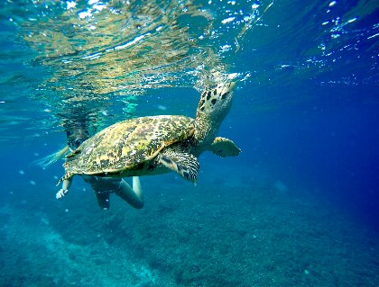
dronepicr
Original title: Sea turtle breath underwater (20910998842).jpg
Meeresschildkröten in Indonesien. Sea turtles in Indonesia.
Source photograph and reuse record · CC BY 2.0
Adaptation: Horizontally mirrored to keep the turtle’s head clear of the camera opening; resized and cropped for the case. Download case artwork.
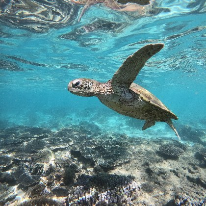
Simonverhamme
Original title: Sea turtle swimming.jpg
Coincidential meeting with a sea turtle on the Ningaloo reef in Coral Bay. Taken by GoPro 7.
Source photograph and reuse record · CC BY-SA 4.0
Adaptation: Resized and cropped for a phone case. Download case artwork.
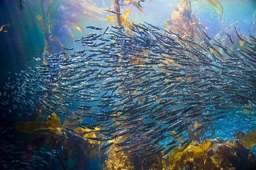
oliver.dodd
Original title: Fish swarm through the kelp forest.jpg
Fish swarm through the kelp forest
Source photograph and reuse record · CC BY 2.0
Adaptation: Resized and cropped for a phone case. Download case artwork.
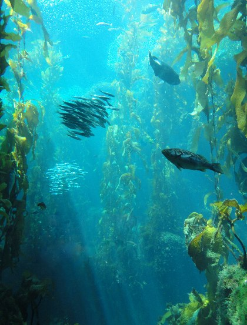
Daderot
Original title: Kelp Forest - MBA - DSC06954.JPG
Kelp Forest tank, Monterey Bay Aquarium, Monterey County, California, USA.
Source photograph and reuse record · CC0
Adaptation: Resized and cropped for a phone case. Download case artwork.
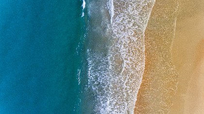
Lance Asper
Original title: Ocean waves drone view of Palm Coast beach.jpg
Palm Coast, United States
Source photograph and reuse record · CC0
Adaptation: Resized and cropped for a phone case. Download case artwork.
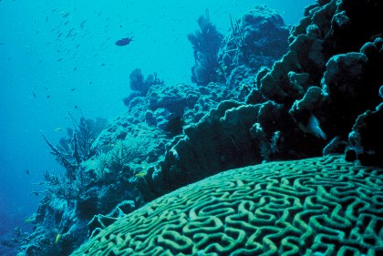
Jerry Reid / U.S. Fish and Wildlife Service
Original title: Coral Reef.jpg
Coral Reef in Florida by Jerry Reid, WO-3540-CD42A, U.S. Fish and Wildlife Service
Source photograph and reuse record · Public domain
Adaptation: Resized and cropped for a phone case. Download case artwork.
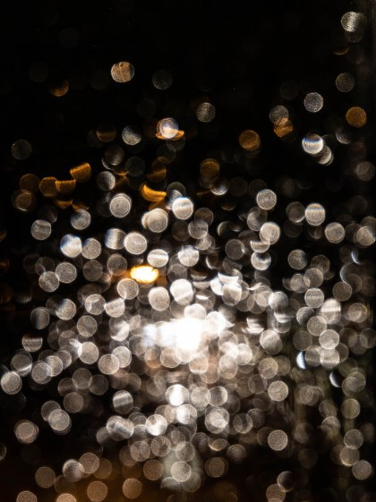
W.carter
Original title: Bokeh raindrops on a window 1.jpg
Bokeh from raindrops on a window in Brastad, Lysekil Municipality, Sweden.
Source photograph and reuse record · CC0
Adaptation: Resized and cropped for a phone case. Download case artwork.
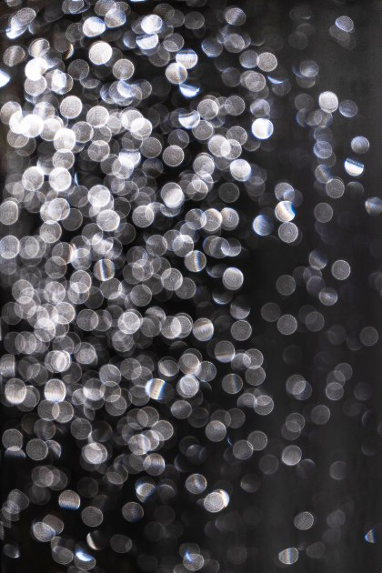
W.carter
Original title: Bokeh raindrops on a window 3.jpg
Bokeh from raindrops on a window in Brastad, Lysekil Municipality, Sweden.
Source photograph and reuse record · CC0
Adaptation: Resized and cropped for a phone case. Download case artwork.
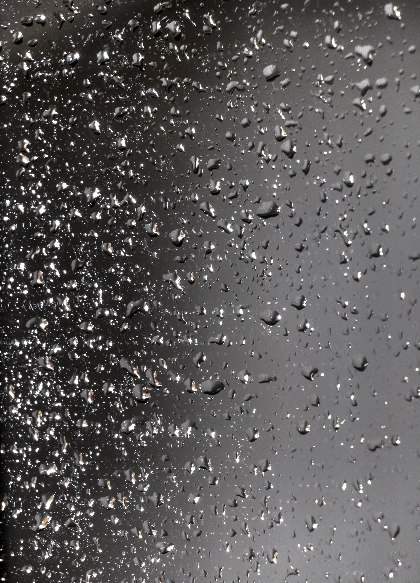
W.carter
Original title: Raindrops on a window in Brastad 2.jpg
Raindrops on a window in Brastad, Lysekil Municipality, Sweden.
Source photograph and reuse record · CC0
Adaptation: Resized and cropped for a phone case. Download case artwork.
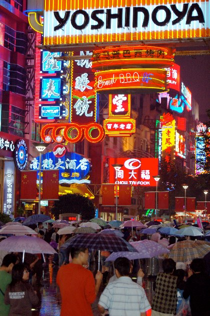
Jakob Montrasio
Original title: Advertising and Rain - Flickr - @yakobusan Jakob Montrasio.jpg
Taken at the beginning of the chinese "Golden Week" 2006. I'm always posting pictures and videos on my blog in high res, be sure to check it out! Explored: 2006-09-30 #228
Source photograph and reuse record · CC BY 2.0
Adaptation: Resized and cropped for a phone case. Download case artwork.
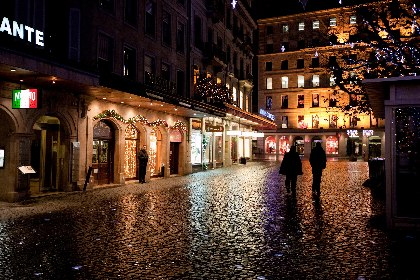
Matt Biddulph
Original title: Geneva street in the rain.jpg
gotta love rain, neon and a fast lens
Source photograph and reuse record · CC BY-SA 2.0
Adaptation: Resized and cropped for a phone case. Download case artwork.
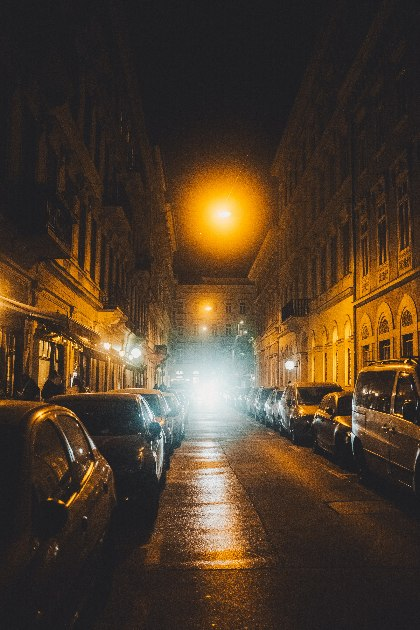
Shixart1985
Original title: Warm street lights glow along a narrow city street filled with parked cars on a rainy night.jpg
Warm street lights glow along a narrow city street filled with parked cars on a rainy night
Source photograph and reuse record · CC BY 2.0
Adaptation: Resized and cropped for a phone case. Download case artwork.
.jpg){kind=link}